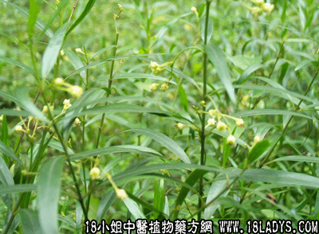

(本文解释权归中药材天地网兄弟站-18小姐中医植物药方网所有,如需转载请注明出处)
寮刁竹(中药材植物名:寮刁竹)(植物科目:萝摩科)

古籍名：石下徐长卿《别汞》。
别名：千云竹，英雄草，山刀竹、徐长卿。
植物名：寮刁竹。
生长环境：本品为多年生草本。多生于山地、丘陵地带，山坡草地上，气候温和，土壤肥沃，但较贫瘠而干燥地方亦可生长。
分布：我国南北各省均有，但以北方较为常见，广东分布很普遍，几乎各县都有。
入药部分：全草。
采集期：夏、秋。
采购地点：药材公司购入。
性味：性温、味辛、有芳香气。
功能：祛风消肿，解毒去瘀。
主治、用量和用法：1、水臌腹胀、配伍用；2、皮肤生蛇，配伍用；3、蛇咬伤，配伍用；4、疳积：干用2～3钱，蜜枣4～5，枚，煎作茶，分服；5、跌打，配伍用。
验方1：（治跌打瘀患方）寮刁竹5钱、透骨消5钱、如地金牛5钱、韩信草5钱、血见愁5钱、泽兰叶5钱，清水四碗，煎成一碗服。
（方解）寮刁竹祛风消肿，入地金牛行气止痛，泽兰叶5钱，清水四碗，煎成一碗服。
（方解）寮刁竹祛风消肿，入地金牛行气止痛，泽兰叶、血见愁、韩信草理血散瘀、透骨消入骨疗伤，合为祛风消肿理血气，治瘀伤之剂。
（方歌）跌打瘀肿用寮刁、入地金牛透骨消，韩信见愁泽兰叶，祛风散瘀血自调。
验方2：（治皮肤生蛇方）寮刁竹5钱、七里剑3钱、大耳苓3钱、半边莲3钱、蛇总管5钱，清水三碗，煎成一碗服。或用上药胃末、外搽患处，和患处发红痛者，用糖水调开，如痒肿不红痛者，用酒调开。
（方解）皮肤生蛇，有因于内脏湿毒，发于皮肤、亦有外因风热湿毒。本方以寮刁竹消肿去毒，七星剑止痒散毒，六耳苓祛风消肿，止痒散毒，半边莲，蛇总管清热去毒。全方可作内服以治理，亦可外用宜治局部。为末用糖调敷，取其润性，用酒敷调，是取其温性。
（方歌）皮肤生蛇痒不停，寮刁竹与六耳苓，七剑半边莲总管，祛风散瘀毒能清。
验方3：（治膨胀方）寮刁竹3钱、白石笋5钱、干蚌花1钱、黄皮根5钱，清水二碗，煎成一碗服。
（方歌）水肿膨胀腹入水，刁竹黄皮根蚌花，白石笋齐煎水服，利尿消肿效堪夸。
验方4：（治蛇咬伤方）寮刁竹3钱、金耳环1钱、半边莲3钱、大金3钱、入地金牛根5钱、蛇总管5钱，清水三碗，煎成一碗服。
（方解）本方由几种解蛇伤毒之草药组成，而寮刁竹解蛇伤毒，兼能消肿祛瘀，金耳环、入地金牛又能消肿祛风，蛇总管、半边莲。大金兼长清热解毒。全方既有解蛇毒之长，又有祛风、消肿，散瘀之效。
（方歌）毒蛇咬伤痛难堪，寮刁竹与入地金，耳环半边莲总管，大金同兼毒难侵。
参考资料：《广东省中医验方交流汇编》新X区治疗毒蛇咬伤方，蛇丸方：此丸专治蛇咬，并治运身蛇，蛇头缠指，无名肿毒等。处方：寮刁竹、六耳苓、金锁匙、大叶蛇总管、假苦瓜、半边旗叶、金鸡爪、香萸、鹅不食，鸟扣头、狗脚迹、田茎黄、半边莲，以上各4两，七星剑8两，共14味，晒干研末，炼蜜为丸，每个3钱，蜡壳封固。倘贝蛇咬伤，即用器皿清水刮去恶血，用一丸开酒服，一丸敷伤口，一边露口流毒，毒尽即愈。
土华乡、某医生介绍治蛇咬方：寮刁竹、独角莲、 蛤乸王、半边旗、毛射香、菊花心、山桂花，石上莲，土牛七、金鸡爪、金锁匙，紫背金牛，各3钱，浸酒1斤、每次服2两，或用酒两碗煎至8分。
(本文解释权归中药材天地网兄弟站-18小姐中医植物药方网所有,如需转载请注明出处)